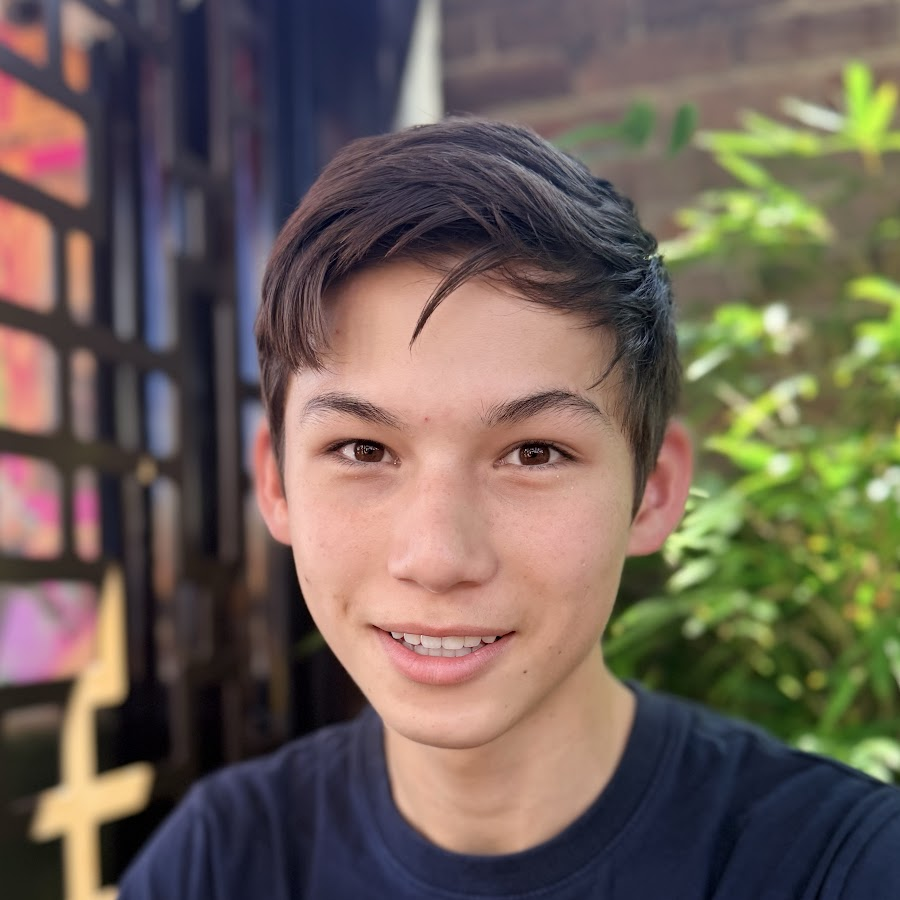

FIRST Tech Challenge
DECODE season — Innovate Award 1st Place (Bluey, 11144) and Inspire Award 2nd Place (18306) at the Sydney North Qualifier.

FRC Journey
From VEX to FRC - competing with two Barker teams across regionals, Worlds, and Einstein.

VEX Competition Journey
Two seasons of VEX Robotics - from Nationals-winning Whisper to the powertrain-optimised Switch, plus a V5RC Middle School Nationals win.

VEX IQ Journey
Full Volume season - a Barker League tournament win and a top-6.4% finish at the 2024 VEX Robotics World Championship.

QDD Actuator - Shoulder/Hip Joint
A 55mm quasi-direct drive actuator built around a custom cycloidal gearbox - 50Nm continuous torque for shoulder- and hip-style joints.

Mechanical Hand Motion Capture
A low-cost potentiometer-based exoskeleton for sign-language interpretation - 15 channels of joint data reconstructed into a live 3D hand model.

YouTube — Brandon Lai
My own channel documenting robotics builds - custom actuators, combat robots, and a self-balancing robot, from first prototype to finished machine.

Mini Echo
Three prototypes - from micro servos and AA batteries to inverse kinematics, mechanical linkages, and a fully integrated walking quadruped.
QDD Actuator - Elbow/Wrist Joint
The fast, light counterpart to the first actuator - a vertical-stack planetary design tuned for speed and low reflected inertia near the end effector.
Parametric Wind Turbine Blades
Parametric CAD, CFD, and iterative print-and-test cycles on micro wind turbine blades - paired with a real legislative policy submission on agricultural decarbonisation.
Bin-Picking Manipulation RL
Eleven PPO training iterations on a simulated bin-picking policy - chasing a reward-hacking exploit, a blocked curriculum target, and finally, real finger contact.